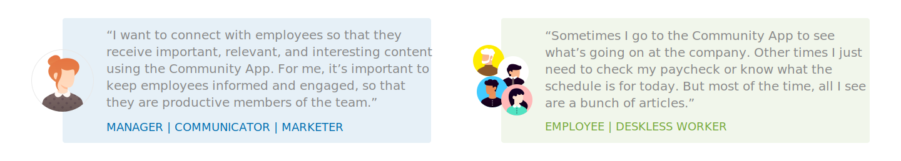

Dynamic Signal is an employee communications platform dedicated towards engaging and activating employees. For this project, I was tasked with designing the end to end flows of a new feature: quick polls. This includes the creation of the poll, its distribution method, responding to the poll, and tracking results.
The news feed is the first thing that users see when entering the app. Our research showed that 60% of employees didn’t find much value in the feed because the content wasn’t relevant to them.
Communication managers (those creating the content) were looking for better ways to engage their employees in addition to just pushing out company-related content to a news feed. They were also interested in receiving feedback from employees as a way to empower them.
Once it was clear that app engagement was an issue, the product team held a brainstorming session to explore some ways that we could boost engagement. Ideas from this brainstorm included requests heard firsthand from customers, 2nd hand from customer success managers, roadmap requests from sales, marketing, and other internal teams, and original ideas from the product team.
For this session, it was important to ensure the proper context and goals, that we agreed on a framework for assessing ideas, and that we were able to efficiently organize the best ideas across major themes in the platform.
Quick Polls was one of the consistent ideas made across the board. Me and a fellow PM picked up on this idea to vet with customers as a potential feature.
For these calls, we wanted to make sure that we were asking the right questions. It’s easy to talk about a shiny new feature and receive a quick ‘yes’ from customers saying they would use it. But that doesn’t necessarily equate to us solving a problem.
We started by talking about some of the challenges that communication managers deal with in trying to engage their employees. This allowed the conversation to flow into a brainstorming session with the customer.
The key piece of feedback we consistently heard is that communication managers have no way of receiving feedback from employees. They were simply looking to find a pulse in their employees, and a feature like polls would be able to solve for that.
Many customers referred to polls on other sites as useful engagement tools, so I decided to look into those prominent social platforms to understand what consistency standards there were for polls.
While looking at polls on Twitter, Facebook, Slack, and Buzzfeed, it’s important to note that we weren’t looking to just copy best practices. Rather, we wanted to understand why those solutions were successful in context, then shift the focus back to our product based on our users needs.
Before jumping into designs, I wanted to make sure I was designing for users actions and not just a technically implemented feature with some best practices that I’ve gathered.
The communication manager’s requirements:
The employee, on the other hand, simply should be able to identify this poll in a news feed, be able to easily respond to it and see the results.